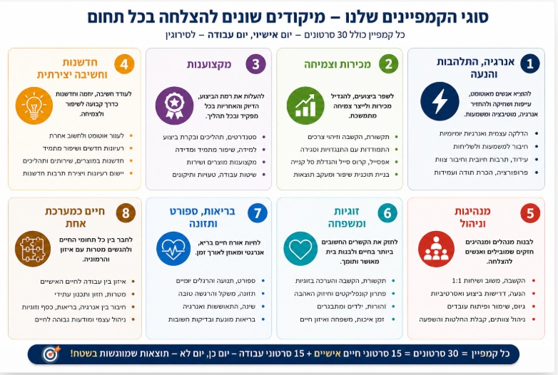
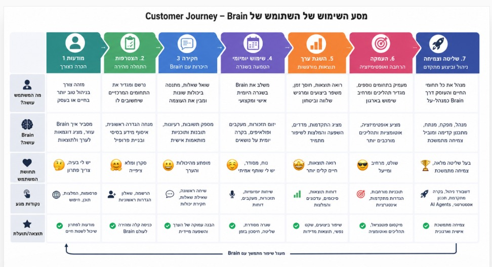
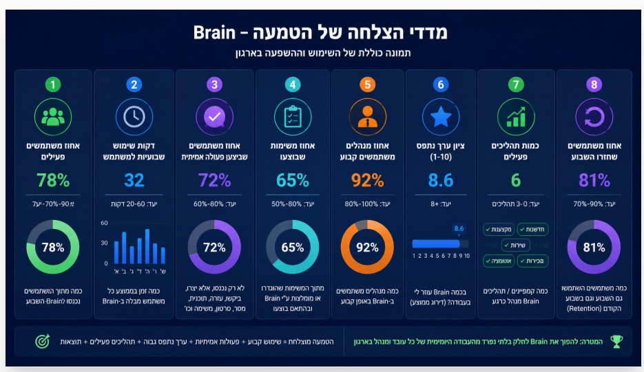

DIY · DO IT YOURSELF
אוטומטי לחלוטין. מקצה לקצה.
Brain בנויה לפעול כחברה אוטומטית לחלוטין.
מהאינטראקציה הראשונה ועד לאימוץ ארוך טווח — כל שלב מנוהל על ידי Brain Agents מבוססי AI.
🤖
מכירות אוטומטיות
ה-AI Sales Agent שלנו מציג את Brain, עונה על שאלות, מדגים ערך, מאפיין הזדמנויות ומלווה לקוחות לאורך האונבורדינג.
ללא תהליך מכירה ידני
⚡
אונבורדינג אוטומטי
ברגע שלקוח מצטרף, Brain מגדיר אוטומטית את החוויה, מתאים אישית את המסע ומשיק את תהליך היישום.
ללא יועצים
🚀
יישום אוטומטי
Brain Implementation Agent ייעודי עוזר למשתמשים לאמץ התנהגויות, תהליכים, יעדים ושיטות עבודה מומלצות חדשות.
הסוכן עוקב, מזכיר, מסביר, מעודד ועוזר להפוך תוכניות לפעולה.
🧑🏫
מנטור AI אישי
כל משתמש מקבל Brain Agent אישי הפועל כמנטור יישום.
- מעודד שימוש סדיר
- עוזר לבנות הרגלים חדשים
- עונה על שאלות
- מספק הדרכה ותמיכה
- שומר על מיקוד ביעדים
- מקדם שיפור מתמיד
📊
ניטור מעורבות אוטומטי
Brain מנטר ברציפות מעורבות ואימוץ.
- מזהה שימוש נמוך
- מעודד משתמשים לא פעילים
- מודד רמות השתתפות
- עוקב אחרי התקדמות יישום
- אוסף משוב שביעות רצון
- מזהה הזדמנויות לשיפור
🏆
הצלחת לקוח אוטומטית
Brain לא מפסיק אחרי הפריסה.
הפלטפורמה עובדת ברציפות להגדלת האימוץ, המעורבות, איכות היישום ותוצאות העסקיות.
החזון
רוב התוכנות עוזרות לאנשים לנהל עבודה.
Brain עוזרת לארגונים לגרום לעבודה לקרות.
דרך שכנוע, פולו-אפ, יישום ותמיכה מתמשכת מבוססי AI,
Brain יוצרת קטגוריה חדשה:
The AI Co-Manager.
Brain — בונה את עתיד הניהול.
כניסה הדרגתית ובטוחה
מתחילים קטן, גדלים בביטחון. ניסוי עם קבוצה קטנה, ואז מרחיבים בהדרגה לכל הארגון — בקצב שלכם.
20 משתמשיםפיילוט ראשוני
←
100 משתמשיםהרחבה
←
200+ משתמשיםצמיחה
←
כל הארגוןהטמעה מלאה
מסע ההטמעה שלכם
תהליך פשוט, מלווה אישית מהרגע הראשון.
1
מקבלים לינק + ערוץ היוטיוב שלנו — ומתרשמים
2
מקבלים סרטוני הדרכה על המוצר
3
ליווי אישי צמוד לאורך הדרך (קובי ודונה)
4
מוציאים את הקמפיין הראשון
5
עובדים עם ה-Cockpit / התפריט כמרכז שליטה
6
מקבלים נייר וסרטונים על עוד שימושים
7
מודדים שביעות רצון שוטפת — סקר וואטסאפ או בתוך המוצר
שלב א'
הטמעה מהירה והוכחת ערך (0–6 חודשים)
ללא ERP · ללא אינטגרציות · ללא פרויקט IT
01
Campaigner & Implementor Engine
מנוע ההנעה, העידוד והביצוע של Brain. הפעלת כל יוזמה, יעד או שינוי — מהיום הראשון.
- סרטונים
- תמונות
- מסרים
- תזכורות
- Follow-Up
- משימות
02
קמפיין הטמעה אוטומטי
מיד לאחר העלייה לאוויר:
- 30 סרטונים
- 30 תמונות
- מסרים והנעות לפעולה
- תוכנית הטמעה ל-90 יום
03
Follow-Upper מתקדם
מנוע מעקב חכם שמוודא שהדברים באמת קורים:
- מעקב אחר התחייבויות
- תזכורות חכמות
- סגירת מעגלי ביצוע
- התמדה ויישום
04
ספר הידע הארגוני
כל הידע הארגוני במקום אחד:
- נהלים
- Best Practices
- תהליכי עבודה
- שאלות ותשובות
- ידע מצטבר
05
Cockpit ניהולי
מסך שליטה מיידי ומוכן לשימוש:
- תמונת מצב
- משימות
- חריגים
- הזדמנויות
- סדרי עדיפויות
06
Co-Manager אישי
עוזר ניהולי אישי לכל מנהל ועובד:
- סדר וארגון
- קבלת החלטות
- תכנון
- מעקב
- ביצוע
07
מדידה והוכחת ROI
רואים את ההשפעה במספרים:
- שימוש
- מעורבות
- יישום
- ביצועים
- תוצאות
08
הרחבה ארגונית
מפיילוט ראשוני להטמעה רחבה בכלל הארגון — בקצב שמתאים לכם.
התוצאה לאחר מספר חודשים
Campaigner & Implementor Engine
Follow-Up אוטומטי
ספר ידע ארגוני
Cockpit ניהולי
Co-Manager אישי לכל עובד ומנהל
שיפור ביישום, מעורבות וביצועים
סוגי הקמפיינים — מיקוד לכל תחום
כל קמפיין = 30 סרטונים (15 חיים אישיים + 15 עבודה) — יום כן, יום לא. תוצאות שמומשגות בשטח.

מסע השימוש — Customer Journey
שבעת שלבי השימוש ב-Brain — ממודעות והצטרפות ועד שליטה וצמיחה מתמשכת.

רעיונות לסרטונים — 160 נושאים מוכנים
בנק נושאים לקמפיינים ולסרטוני הדרכה — לעבודה ולחיים. לחצו על קטגוריה לפתיחה.
צ'קליסט שימוש — מה להגיד ל-Brain
לכל יכולת — המשפט המדויק שאומרים ל-Brain. ממסמך הסבר למסמך הפעלה אמיתי.
שימוש כללי במערכת · 10
- לנהל שיחה קולית רציפה עם Brain בזמן נהיגה או הליכה«Brain, בוא ננהל שיחה קולית פתוחה ותוביל אותי בנושא שאני צריך»
- לעבור בין נושאי חיים ועבודה באותה שיחה בקלות«Brain, בוא נעבור עכשיו מנושא אישי לנושא עבודה ולהפך לפי הצורך»
- לבקש רעיונות, תוכניות, סיכומים והמלצות לכל נושא«Brain, תן לי רעיונות, המלצות ותוכנית פעולה בנושא הבא: ______»
- להשתמש במיקרופון במקום הקלדה«Brain, פשוט לחץ מיקרופון ודבר כרגיל — Brain יבצע את הבקשה»
- לקבל סיכום תמונה ברור של כל שיחה או נושא«Brain, סכם לי את הנושא הזה בתמונה אחת ברורה ופשוטה»
- להכין תוכנית עבודה מלאה לכל משימה«Brain, בנה לי תוכנית עבודה מלאה לביצוע המשימה הבאה: ______»
- לבצע בקרה על נושאים חשובים באופן קבוע«Brain, תבצע איתי בקרה שבועית על הנושא הבא: ______»
- להפעיל את כפתור "תעשה לי הכול"«Brain, תעשה לי הכול ותבדוק מה דורש טיפול כרגע»
- לקבל תזכורות, מעקבים ופולואפים«Brain, תזכיר לי ותוודא שאני מבצע את המשימה הבאה: ______»
- להשתמש ב-Brain כמנהל אישי ומקצועי לאורך היום«Brain, תלווה אותי היום ותעזור לי לקבל החלטות ולבצע»
אנרגיה ומצב רוח · 10
- תרגילי נשימה מודרכים לרוגע, ריכוז ואנרגיה«Brain, תוביל אותי עכשיו בתרגיל נשימה של שתי דקות»
- נוהל תודה יומי«Brain, בוא נעשה עכשיו נוהל תודה על 20 דברים טובים»
- פרופורציה למצבים מלחיצים«Brain, תעזור לי להכניס את המצב הזה לפרופורציה»
- לדרג קשיים מול מה שחשוב באמת«Brain, תעזור לי לדרג את הבעיה הזאת מול הדברים החשובים באמת»
- נוהל הדלקה עצמית«Brain, תעשה לי עכשיו נוהל הדלקה עצמית»
- משפטי חיזוק אישיים«Brain, תזכיר לי מה הכוחות שלי ומה טוב בי»
- להפוך כעס ותסכול למנוע לפעולה«Brain, איך אני הופך את התסכול הזה לדלק לפעולה?»
- רשימת מקורות אנרגיה אישיים«Brain, תעזור לי לבנות רשימת דברים שמטעינים אותי באנרגיה»
- תזכורות להתחדשות אנרגטית«Brain, תזכיר לי לעצור ולהטעין אנרגיה במהלך היום»
- מדידת רמת אנרגיה לאורך זמן«Brain, בוא נמדוד את רמת האנרגיה שלי ונראה מגמה»
ניהול קושי ועמידות · 10
- לבחון מחדש מחשבות שליליות«Brain, אני אספר את המחשבות שלי ואתה תעזור לי לבדוק אותן»
- תוכנית פעולה למצבים קשים«Brain, בנה לי תוכנית פעולה מסודרת למצב הבא: ______»
- ללמוד דרכי התמודדות עם קשיים«Brain, למד אותי איך להתמודד נכון עם הקושי הבא: ______»
- פתרונות לבעיות לפני כניסה ללחץ«Brain, תן לי פתרונות אפשריים לבעיה הזאת»
- לחזק עמידות נפשית«Brain, בנה לי תוכנית לחיזוק העמידות הנפשית שלי»
- לזהות ירידות אנרגיה ולטפל«Brain, תעזור לי להבין למה ירדה לי האנרגיה»
- תוכנית התאוששות אחרי משבר«Brain, תבנה לי תוכנית התאוששות מהמצב שאני נמצא בו»
- מחשבות מחזקות למצבי קושי«Brain, תן לי רשימת מחשבות מחזקות למצב הזה»
- לזהות דפוסים חוזרים שמחלישים«Brain, איזה דפוסים חוזרים פוגעים בי ואיך פותרים אותם?»
- למדוד מגמת חוסן לאורך זמן«Brain, תמדוד איתי את החוסן האישי שלי לאורך זמן»
זוגיות ומשפחה · 10
- בדיקת מצב לזוגיות ולמשפחה«Brain, בוא נעשה בדיקת מצב לזוגיות ולמשפחה שלי»
- רעיונות לחיזוק הקשר הזוגי«Brain, תן לי רעיונות לחיזוק הקשר עם בן או בת הזוג»
- משפטים מתאימים לבן/בת הזוג«Brain, תן לי משפטים טובים להגיד לבן או בת הזוג»
- שיחה משמעותית ומקרבת«Brain, תכין לי שיחה טובה ומקרבת לערב»
- פתרון קונפליקטים זוגיים«Brain, תעזור לי לפתור נכון את הקונפליקט הזה»
- לעבור ילד-ילד ולבדוק מה הוא צריך«Brain, בוא נעבור ילד ילד ונבדוק מה כל אחד צריך ממני»
- לחזק קשר עם כל ילד«Brain, איך אני מחזק את הקשר שלי עם כל אחד מהילדים?»
- לבדוק שהילדים מקבלים תשומת לב«Brain, תבדוק איתי מי מהילדים צריך יותר תשומת לב»
- בדיקת מצב לקשר עם ההורים«Brain, בוא נעשה בדיקת מצב לקשר שלי עם ההורים»
- תזכורות מול משפחה והורים«Brain, תזכיר לי דברים חשובים לעשות מול המשפחה וההורים»
בריאות ואורח חיים · 10
- תוכנית ספורט שמתאימה ללו"ז«Brain, בנה לי תוכנית ספורט שמתאימה לשבוע שלי»
- תזכורות לפעילות גופנית«Brain, תזכיר לי לבצע פעילות גופנית ותבדוק שביצעתי»
- תפריט תזונה מותאם«Brain, בנה לי תפריט שמתאים למטרות ולמאכלים שאני אוהב»
- פרויקט ירידה במשקל«Brain, בוא נבנה תוכנית ירידה במשקל עם יעדים ומעקב»
- התאוששות אחרי חריגה בתזונה«Brain, חרגתי היום בתזונה, איך חוזרים למסלול?»
- מעקב הרגלי בריאות«Brain, תעזור לי לעקוב אחרי הרגלי הבריאות שלי»
- שגרת שינה בריאה«Brain, בנה לי שגרת שינה טובה ובריאה»
- לזהות הרגלים מזיקים ולהחליף«Brain, איזה הרגלים מזיקים לי ואיך מחליפים אותם?»
- המלצות פשוטות לשיפור בריאות«Brain, תן לי המלצות פשוטות לשיפור הבריאות שלי»
- עקביות עם בקרות קבועות«Brain, תבצע איתי בקרה קבועה ותעזור לי להתמיד»
חיים אישיים · 10
- לשמור על קשר עם חברים«Brain, בוא נעבור על החברים שלי ונחליט עם מי כדאי ליצור קשר השבוע»
- להרחיב מעגל חברתי«Brain, תן לי רעיונות להכיר אנשים חדשים ולהרחיב מעגל חברים»
- רשימת חוויות להגשים«Brain, תבנה לי רשימת חוויות שאני חייב לחוות בשנים הקרובות»
- לשלב חוויות ביומן ולבצע«Brain, תעזור לי להכניס חוויות ליומן ולבצע אותן בפועל»
- בקרה על כסף, הוצאות והכנסות«Brain, בוא נעשה בדיקת מצב מלאה להכנסות, הוצאות ותזרים»
- בדיקת פנסיה, ביטוחים וחיסכון«Brain, תכין לי צ'קליסט לבדיקת פנסיה, ביטוחים וחסכונות»
- תוכנית השקעות מותאמת«Brain, תעזור לי לבנות תוכנית השקעות שמתאימה למטרות שלי»
- תכנון קריירה ל-5/10 שנים«Brain, בוא נבנה תוכנית קריירה ל-5 או 10 השנים הבאות»
- מקור הכנסה נוסף«Brain, תציע לי רעיונות להכנסה נוספת שמתאימים לי»
- מודעות עצמית ושאלות עומק«Brain, תשאל אותי שאלות עומק שיעזרו לי להבין את עצמי טוב יותר»
ניהול עצמי כמנהל · 10
- איפוס בוקר וקביעת מיקוד«Brain, בוא נעשה איפוס בוקר ונחליט מה הכי חשוב לקדם היום»
- שהיומן משקף עדיפויות«Brain, תעבור איתי על היומן ותבדוק שהוא משקף את העדיפויות שלי»
- לקצר עומסים מיותרים«Brain, מה אפשר להוריד, לדחות או לקצר מהיום שלי?»
- תזכורת ליעדים ארוכי טווח«Brain, תזכיר לי לאן אני רוצה לקחת את התפקיד והארגון»
- תוכנית פעולה לכל יעד«Brain, בנה לי תוכנית פעולה מסודרת להשגת היעד הבא»
- שיפור אישי כמנהל«Brain, מה אני יכול לעשות טוב יותר כמנהל?»
- פערים מול ניהול מיטבי«Brain, איפה הפערים בין איך שאני מנהל לבין ניהול מצוין?»
- לזהות פספוסים ניהוליים«Brain, אילו פספוסים ניהוליים אני כנראה עושה כרגע?»
- תמיכה בשיחות קשות ומשובים«Brain, תכין לי את השיחה הקשה הזאת בצורה נכונה»
- לדרוש ביצועים באסרטיביות«Brain, איך אני דורש ביצועים בצורה ברורה ואסרטיבית?»
חיבור והנעת עובדים · 10
- מסר בוקר מחזק לצוות«Brain, תכין לי מסר בוקר קצר ומחזק לצוות»
- סרטון עידוד מותאם«Brain, תכין לי סרטון עידוד בנושא הבא: ______»
- תמונת מסר להעברת ערך«Brain, תכין לי תמונת מסר בנושא הבא: ______»
- הודעה מהירה לעובדים«Brain, תכתוב לי הודעה קצרה לעובדים בנושא הבא»
- חיבור לשליחות ולמשמעות«Brain, תכין לי מסר שמחבר את הצוות למשמעות ולשליחות שלנו»
- חיבור למקצוענות וחדשנות«Brain, תכין לי מסר שמחזק מקצוענות, חדשנות ויוזמה»
- קמפיין מתמשך לשינוי התנהגות«Brain, תבנה לי קמפיין של 30 יום בנושא הבא»
- עידוד מותאם לסוגי עובדים«Brain, איך כדאי לעודד עובדים מהסוג הבא?»
- לזהות מי דורש חיבור«Brain, מי מהעובדים דורש יותר תשומת לב וחיבור?»
- פולואפ אוטומטי על מסרים«Brain, תבצע מעקב ותוודא שהמסר הוטמע בשטח»
ניהול צוות · 10
- טבלת עובדים לפי מדדי השפעה«Brain, תציג לי טבלת עובדים לפי אנרגיה, מקצוענות ויוזמה»
- לזהות מצטיינים ובעלי פוטנציאל«Brain, תעזור לי לזהות מי מצטיין ומי דורש פיתוח»
- לבנות סגנים ואחראי משמרת«Brain, מי מתאים להיות סגן או אחראי משמרת?»
- לזהות דור עתיד«Brain, מי דור העתיד שלי ואיך מפתחים אותו?»
- טיפול פרטני בכל עובד«Brain, מה כדאי לעשות עם העובד הבא?»
- למדוד אנרגיה, יוזמה ומקצוענות«Brain, תציג לי את מצב האנרגיה, היוזמה והמקצוענות בצוות»
- לזהות חסמים אישיים ולעזור«Brain, מהם החסמים של העובד הזה ואיך עוזרים לו?»
- לשפר אחוזי תגובה וביצוע«Brain, איך משפרים את אחוזי התגובה והביצוע של העובדים?»
- לחזק אחריות ועצמאות«Brain, איך אני גורם לעובדים לקחת יותר אחריות?»
- התרעות על עובדים שדורשים תשומת לב«Brain, מי מהעובדים דורש ממני טיפול או שיחה?»
מקצוענות וחדשנות · 10
- ציון מקצוענות ומגמה«Brain, תציג לי את ציון המקצוענות והמגמה שלנו»
- לזהות פערים מקצועיים«Brain, מהם הפערים המקצועיים המרכזיים שלנו?»
- ספר ארגוני של ידע ונהלים«Brain, תציג לי את הספר הארגוני ותציע שיפורים»
- רשימת עשה ואל תעשה לתפקיד«Brain, תבנה לי רשימת עשה ואל תעשה לתפקיד הבא»
- מאגר מקרים ותגובות«Brain, תבנה מאגר מקרים ותגובות לתפקיד הזה»
- מצב חדשנות ומגמות«Brain, תציג לי את מצב החדשנות והמגמות בארגון»
- רעיונות חדשים באופן קבוע«Brain, תן לי 20 רעיונות חדשים לשיפור בתחום הבא»
- סיעור מוחות מובנה«Brain, בוא נעשה סיעור מוחות מסודר בנושא הבא»
- להפוך מעצבן להזדמנות«Brain, מה מעצבן אותנו ואיך הופכים את זה לחדשנות?»
- מעקב יישום רעיונות«Brain, אילו רעיונות יושמו ואילו עדיין תקועים?»
ביצועים ותוצאות · 10
- קוקפיט מדדים בזמן אמת«Brain, תציג לי את הקוקפיט ותראה לי מה צהוב, אדום וירוק כרגע»
- מדדי תוצאה ומגמות«Brain, תציג לי את המדדים המרכזיים ואת המגמות שלהם לאורך זמן»
- לזהות חריגות ולטפל«Brain, איפה יש חריגות ומה אתה ממליץ לעשות כדי לטפל בהן?»
- לשפר יחס המרה«Brain, איך אפשר להעלות את יחס ההמרה שלנו בחודש הקרוב?»
- להגדיל סל קנייה«Brain, איך אפשר להגדיל את סל הקנייה הממוצע של הלקוחות?»
- גיוס למועדון«Brain, תן לי תסריטי גיוס למועדון ותוכנית להגדלת ההצטרפות»
- הגדלת תנועת לקוחות«Brain, תבנה לי תוכנית שנתית להגדלת כמות הלקוחות הנכנסים»
- לקוחות מביאים לקוחות«Brain, איך גורמים ללקוחות קיימים להביא עוד לקוחות חדשים?»
- מעקב רווחיות והוצאות«Brain, תציג לי תמונת מצב של הכנסות, הוצאות ורווחיות»
- 3 הדברים לשיפור עכשיו«Brain, מהם שלושת הדברים הכי חשובים שאני צריך לשפר עכשיו?»
צמיחה ארגונית · 10
- תוכנית שנתית עם מעקב«Brain, תבנה לי תוכנית עבודה שנתית ותבצע איתי מעקב שוטף»
- תוכנית הדרכה נמדדת«Brain, תבנה לי תוכנית הדרכה ותבדוק שהיא באמת מתקיימת»
- חזון ארגוני והטמעתו«Brain, תעזור לי לנסח חזון ברור ולהטמיע אותו אצל העובדים»
- ערכים ארגוניים«Brain, תבנה לנו ערכים ארגוניים ותוכנית לחיבור העובדים אליהם»
- שיתופי פעולה בין מחלקות«Brain, איפה יש בעיות שיתוף פעולה ואיך משפרים אותן?»
- לאוטמט תהליכים ידניים«Brain, אילו פעולות אנחנו עושים ידנית שכדאי להפוך לאוטומטיות?»
- לאפיין אייג'נטים«Brain, תאפיין לי אייג'נט שיבצע את המשימה הבאה באופן אוטומטי»
- גיוס ושימור עובדים«Brain, תבנה לי תוכנית לשיפור גיוס עובדים ושימור עובדים»
- לקצר בירוקרטיה«Brain, תראה לי איפה אפשר לקצר זמן ולחסוך בירוקרטיה»
- Brain כמנהל-על«Brain, תעבור על כל הארגון, תזהה פערים, תמליץ על פעולות ותבנה תוכנית ביצוע»
פקודות הליבה החזקות ביותר · 17
- תעשה לי הכול«Brain, תעבור על כל התחומים האישיים והעסקיים שלי ותגיד מה דורש טיפול»
- מה אני מפספס?«Brain, מה הדברים החשובים שאני לא רואה כרגע?»
- מה הכי חשוב עכשיו?«Brain, מתוך כל הדברים שעל הפרק, מה הכי חשוב לקדם השבוע?»
- תבנה תוכנית ותוודא ביצוע«Brain, תבנה תוכנית, תפרק למשימות ותוודא שאני מבצע»
- תטמיע תהליך בארגון«Brain, תבנה ותטמיע קמפיין מתמשך בנושא הבא: ______»
- תעודד את העובדים«Brain, תכין לי תוכן עידוד שבועי לצוות בנושא הבא»
- תעלה מקצוענות«Brain, תבנה תוכנית לשיפור המקצוענות בארגון ותמדוד התקדמות»
- תעלה חדשנות«Brain, תבנה תוכנית להגברת חדשנות ותעודד עובדים להציע רעיונות»
- תעלה אנרגיות«Brain, תבנה תוכנית להגברת אנרגיה ומוטיבציה בצוות»
- תעלה שירות«Brain, תזהה פערי שירות ותבנה תוכנית שיפור»
- תעלה מכירות«Brain, תזהה פערי מכירות ותבנה תוכנית שיפור מלאה»
- תזהה חסמים«Brain, מהם החסמים המרכזיים שמונעים מאיתנו להתקדם?»
- תעשה השוואה למתחרים«Brain, תנתח את המתחרים ותראה לי איפה אנחנו חזקים וחלשים»
- תבנה ספר ארגוני«Brain, תאסוף את כל הידע הארגוני ותבנה ממנו ספר ארגוני»
- תבנה בנק שכנועים«Brain, איך משכנעים עובדים לבצע את הפעולה הבאה?»
- תנהל איתי שיחת בוקר«Brain, תוביל אותי בשיחת הבוקר הקבועה שלי ותעזור לי לבחור במה להתמקד»
- תוביל אותי כמו מנטור אישי«Brain, תוביל אותי עכשיו בשיחה אישית ותעזור לי להתקדם בחיים ובעבודה»
שלב ב'
חיבור למערכות הארגון
כשתהיו מוכנים — Brain מתחבר לעומק לתשתיות הארגון.
02
Cockpit ארגוני מבוסס נתונים
04
אוטומציה של תהליכים ארגוניים
05
ניהול וביצוע מבוססי נתונים בזמן אמת
Brain הופך לשכבת ה-Execution Intelligence של הארגון
מערכת אחת שמניעה אנשים, מיישמת תהליכים ומחברת בין ידע, ביצוע ותוצאות.
מדדי ההצלחה — Brain Adoption Score
תמונה כוללת של השימוש וההשפעה בארגון — תוך 30 שניות רואים אם Brain באמת הוטמע, ולא רק הותקן.

הטמעה מוצלחת = שימוש קבוע + פעולות אמיתיות + ערך נתפס גבוה + תהליכים פעילים + תוצאות.
ליווי והטמעה · תמיכה אישית
קובי — מלווה ההטמעה שלכם